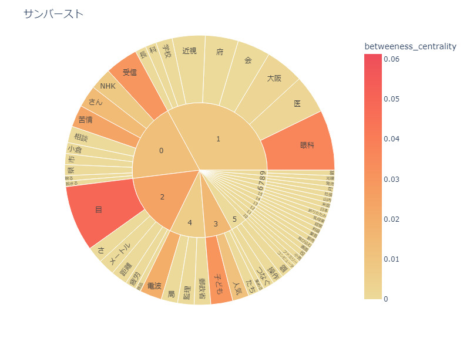
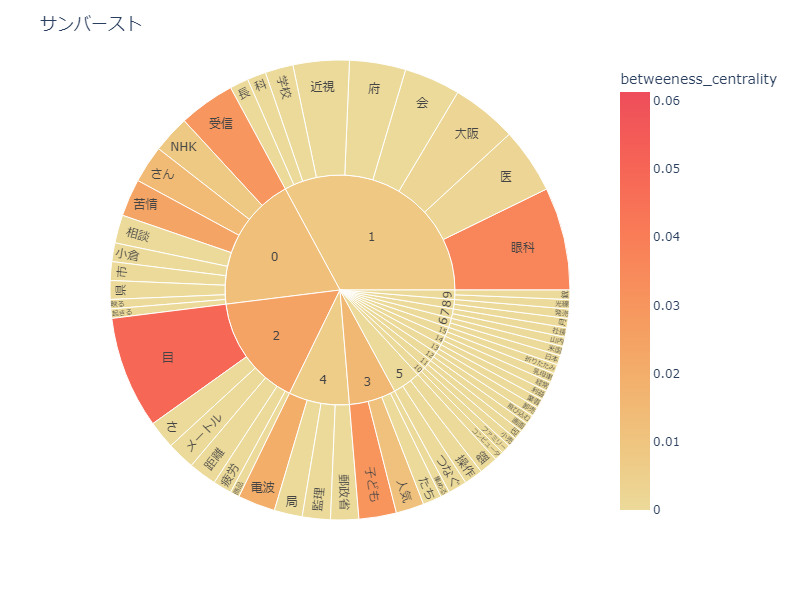

任天堂の過去と未来の比較
11/21 2023
デザイン演習Ⅰ・Ⅱ
前提
あらかじめメーカー、任天堂というワードを抜いてある。出力したデータは以下の通り。
比較用写真


 


考察
1984年までは目、眼科、医などゲームの影響関連のワードなどが見られ、大きな事件やゲーム機の機種名は見られない。 しかし1985年からは販売、前年、利益などの経済系のワードやスイッチ、DSなどの機種名のワード、マリオやゼルダ、ポケモンなどの ゲームタイトルワードが出てきた。またペアレンタルコントロールなどの機能ワードも見つけられた。 これは1985年からは様々なジャンル、有名なタイトルが開発されたりして出てきたり、それによって記事に取り上げれたと考えられる。